In this lab, you will add the Carousel widget to your ViewApp. You will create a layout, assign the Carousel widget to a pane, and configure the widget to display a set of Overview graphics. Then you will assign the new layout to the Home navigation item in the ViewApp Editor and configure AutoFill settings.
When you test your ViewApp in the preview session, you will navigate to Home and see the Carousel widget cycle through a display of Overview graphics.
Objectives: Upon completion of this lab, you will be able to:
Use the Carousel widget in a ViewApp
Configure a Home display in a ViewApp
Create a Layout for the Carousel Widget
In the following steps, you will create a layout and assign the Carousel widget to a pane. You will also specify the graphics to appear in the carousel.
On the Graphics tab, in the Training \ Layouts toolset, create a new layout and name it Home_Carousel.
Double-click Home_Carousel to open it in the Layout Editor.
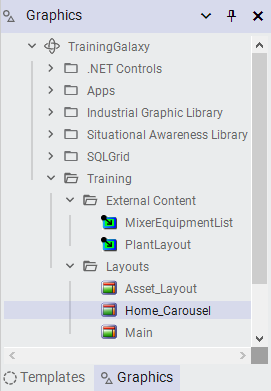
The Graphics panel showing the new Home_Carousel layout in the Training > Layouts toolset
On the Toolbox tab, select the Widgets toolset. Notice that widgets appear in the preview area.
Select the Carousel widget and drag it to Pane1.
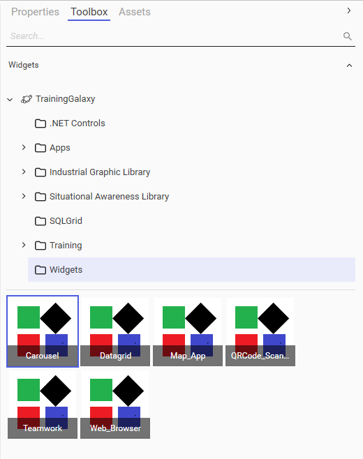
Step 3: Selecting the Carousel widget from the Widgets toolset
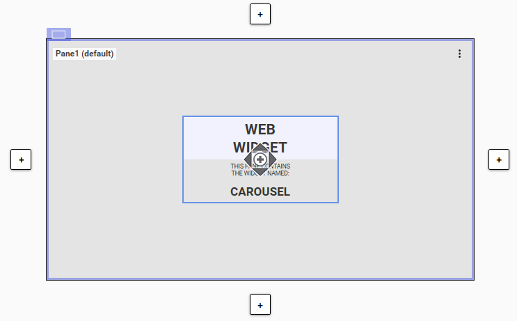
Step 4: The Carousel widget is dragged and dropped into Pane1
On the Properties tab, configure the Widget Properties \ GraphicNames property as follows: Production_Overview, Line1_Overview, Line2_Overview, Packaging_Overview
Leave the other properties as default.
Save and close the Home_Carousel layout, and check it in.
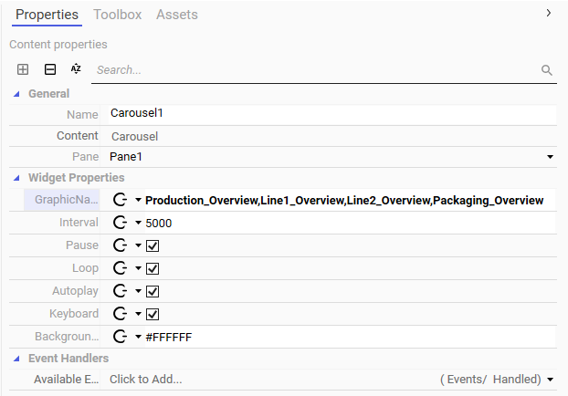
Steps 5–6: Configuring the Carousel widget properties — GraphicNames, Interval, Pause, Loop, and Autoplay
Assign the Layout with the Carousel to Home
To display the layout with the carousel in your ViewApp, you need to associate it with the Home navigation item. In the following steps, you will assign the layout with the Carousel widget to Pane1 of the Main layout from within the ViewApp Editor.
In the ViewApp Editor, in the Navigation list, select Home.
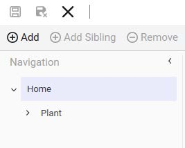
Step 8: Selecting Home in the Navigation list
On the Toolbox tab, search for the Home_Carousel layout.
Drag the Home_Carousel layout to Pane1 to assign it to the Home navigation item.
In the Navigation list, ensure Home is selected.
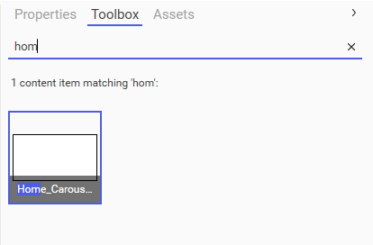
Step 9: Searching for the Home_Carousel layout in the Toolbox
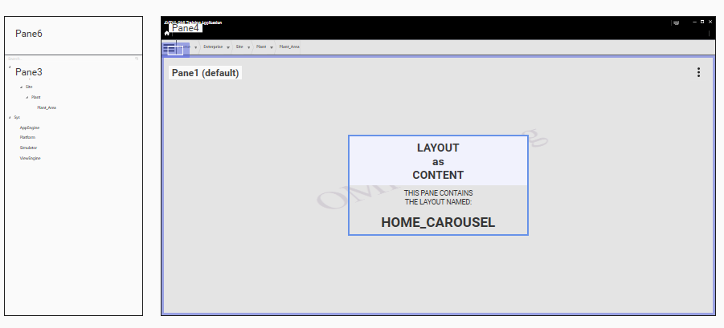
Step 10: Dragging the Home_Carousel layout to Pane1 for the Home navigation item
In the Actions pane, change the Auto-Fill Content option to Current only. This is to avoid having content from child navigation items automatically fill the panes in the Main layout. Alternatively, you can change the Navigation \ Auto-Fill Content option on the Properties tab.
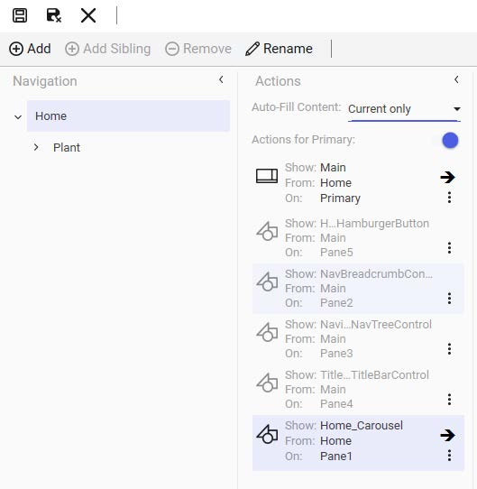
Step 12: Setting Auto-Fill Content to Current only for the Home navigation item
In the Navigation list, select Plant. Notice that its Auto-Fill Content option is changed to Current only as well. This is because changing the Auto-Fill Content option for Home causes the setting to be cascaded down to its child navigation items.
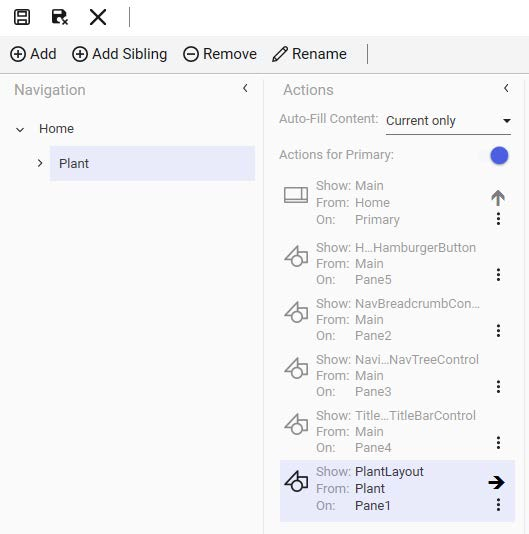
Step 13: Plant's Auto-Fill Content also changed to Current only — the setting cascades from Home to children
Important: When you change Auto-Fill Content for Home, it cascades down to child items like Plant. You must manually change Plant's setting back to ensure content auto-fills properly.
In the next step, you will manually change the Auto-Fill Content option for Plant back to Current, Up, then Down to ensure the content from the navigation items auto-fills properly.
With Plant selected in the Navigation list, change the Auto-Fill Content option to Current, up, then down.
Test the ViewApp in a Preview Session
Now you will test your changes in the ViewApp preview session.
On the top-right of the ViewApp Editor, click Update to save the changes to the ViewApp and update the preview session. The preview session opens, navigated to Plant.
Click the Home icon to navigate to Home.
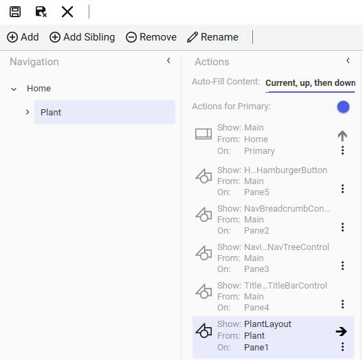
Steps 14–15: Changing Plant's Auto-Fill Content back to Current, up, then down and clicking Update
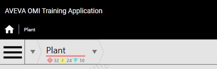
Step 16: Navigating to Home by clicking the Home icon
The Production_Overview graphic appears. It may take some time for the content to be loaded and converted for the carousel to display.
Hover your mouse over a graphic in the carousel, leave it there for longer than 5 seconds, and then move it to the title bar. Notice that the cycling of the carousel graphics pauses when you hover the mouse over the display and resumes when you move it off the display. This is because, by default, the Pause property for the widget is enabled.
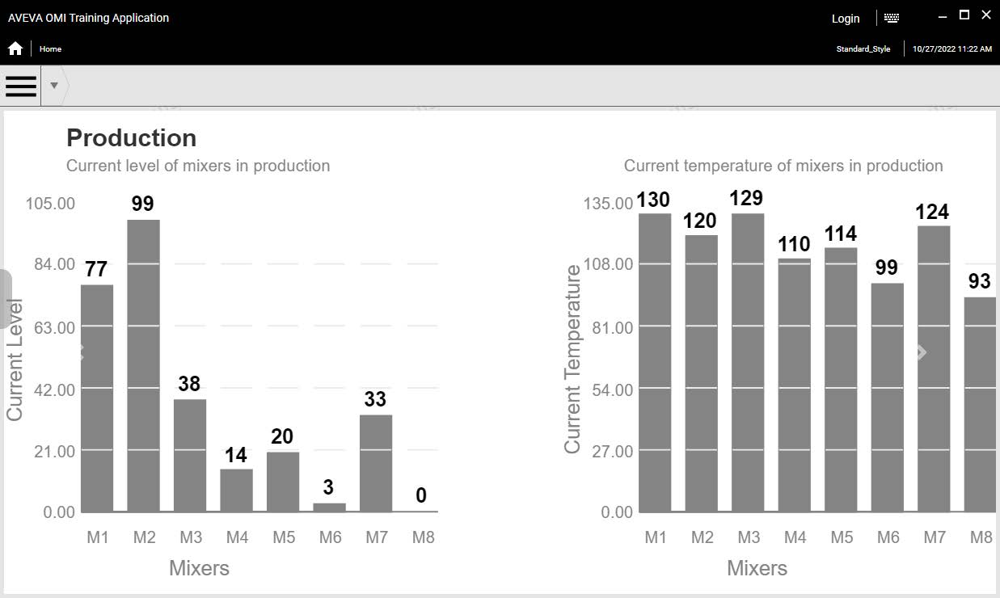
Step 17: The Production_Overview graphic displayed in the carousel — hovering pauses the cycling
Carousel behavior: When not paused, the carousel continuously cycles through the assigned graphics with a 5-second delay between graphics. This is because the Interval property defaults to 5000 ms (5 seconds), and the Loop and Autoplay properties are enabled by default.
The following shows the carousel cycled to the Packaging graphic.
When you are finished testing, minimize the preview session and the ViewApp Editor.
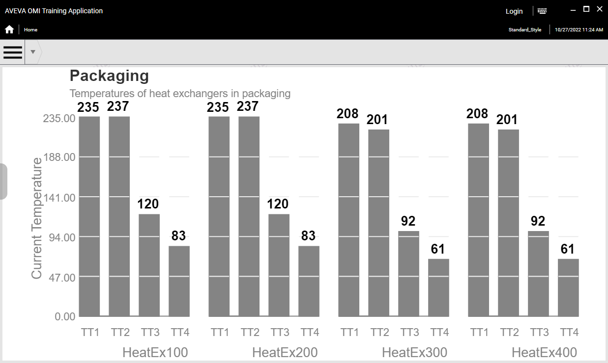
The carousel cycled to the Packaging graphic — showing heat exchanger temperatures across four units
Knowledge Check
Q1: What properties control the Carousel widget's cycling behavior?
The Interval property (default 5000 ms) controls the delay between graphics. The Loop property enables continuous cycling. The Autoplay property starts cycling automatically. The Pause property pauses cycling on mouse hover.
Q2: Why must you change Plant's Auto-Fill Content back to "Current, up, then down" after setting Home to "Current only"?
Changing Auto-Fill Content for Home cascades the setting down to all child navigation items. Setting it to Current only for Plant would prevent content from child navigation items (like Receiving, Production Lines, etc.) from auto-filling properly. Changing it back ensures the content hierarchy works correctly.
Q3: How do you assign a layout to a navigation item in the ViewApp Editor?
Select the navigation item in the Navigation list, then search for the layout on the Toolbox tab and drag it onto the desired pane (e.g., Pane1) of the Main layout.